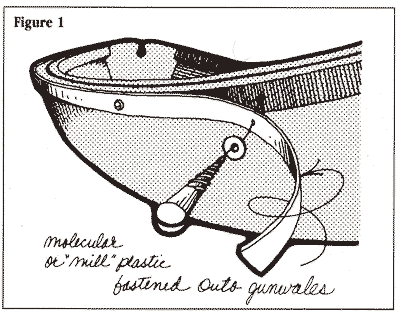
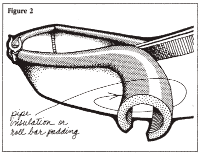
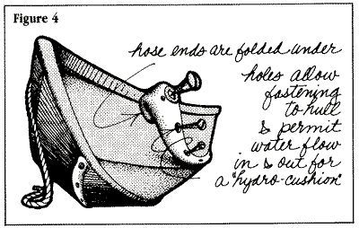
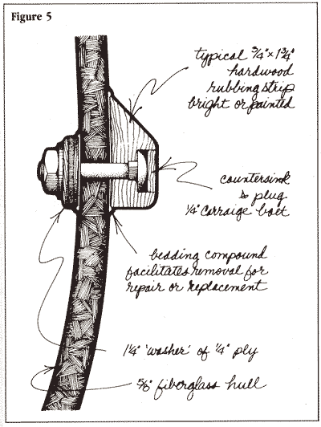

About
About Projects
Projects Games
Games Stories
Stories Store
Store Hobby
Hobby Notes
Notes How-to
How-to2024.03.10 This is a mirror of an article by Paul Butler with illustrations by Marya Butler, excerpted from Small Boat Journal(#47 March 1986) and re-published digitally by Duckworks Magazine.
Gunwale & Hull Cushioning
Almost every boat needs protection from pilings, docks, mooring cans, and other hazards that can scrape, abrade, lacerate, and scar a boat. And small boats in particular need as much armament as practical. Short of equipping your hull with an encircling fender like a circus bumper car, there are any number of protective devices from which to choose.
"Mill" plastic (Fig. 1) (editor's note: the author is probably referring to UHMW) is a dense, tough, waxy plastic available in sheets from sawmill and industrial supply houses. It's used in areas of friction and wear in lumber mills and other industrial applications. The whitewater dory crowd long ago discovered it as a way to virtually bulletproof their dories from the types of punctures encountered on rivers. They use it for chine and bottom protection, sometimes even screwing entire sheets to the bottom.
Mill plastic makes good reinforcement and protection for chines, hull, and gunwale. However, it is so stiff, even in 1/4-inch thicknesses, that it won't readily bend around a chine, so you will have to use it in strips. If you're wearing down the keel of your boat scraping across rocks, cut a strip of the stuff and stick it down there. It's very slippery and won't stick to rocks like aluminum or lead keels.
Attaching the plastic takes some thought. Mill plastic shrinks and swells according to temperature. Attach it on a cool morning, and by afternoon it may be full of small ripples; attach it under a hot sun, and it may pull some fastenings out as it shrinks at night. It can't be glued, at least not to wood or metal, so you must rely on mechanical fastenings. And if you're using it on a wood hull, the wood underneath must be well sealed to prevent rot. Three coats of epoxy or a fiberglass sheathing with epoxy provides the best underseal.
Screws, sometimes with washers or screw caps, are one way to attach the plastic. A round head with a small washer is most effective because it spreads the fastening force over a larger area. If you're using it on the gunwale or hull sides, try countersinking the fastenings to prevent damage to other boats. A flathead wood screw will sink flush into the plastic and works well if you use enough screws to effect a good fastening.
Another type of cushioning is roll bar padding (Fig. 2), as seen on off-road vehicles. It's very similar to the foam tubing used to keep pipes from freezing. Both types will work and are soft, but it's hard to find them in anything except black; however, we have seen it in white and gray. The black insulation may leave marks on the topsides of other boats; wrapping it with vinyl electrical tape will eliminate that problem. Also, unless the insulation is made of closed-cell foam, it may absorb water. Electrical tape can waterproof for a time, but it tends to peel. A truly waterproof closed-cell foam is much better.
You can apply this tubing in sections to the most vulnerable places, or you can wrap the entire perimeter of your boat with one continuous length. If the job is done neatly, it looks good and gives a very functional "workboat" appearance to a small dinghy or runabout.
If you want something a little harder, PVC pipe is available in just about any variety of sizes and some colors. A large section split in half or thirds and screwed to a hull side or gunwale makes a fine rubbing strip that will take unlimited abrasion, very good for laying alongside barnacle covered, creosote pilings. Because of its hardness, PVC pipe will protect your own boat very well indeed, but it may not extend many courtesies to other boats.
 Common garden hose can be used as a gunwale wrap ( Fig. 3) if you don't mind the landlubberly look of the stuff. It works best if you can seal the ends and let the entrapped air act as a cushion. You could lash a length of hose along the outwale of your hull, or you can entwine it around gunwale spacer blocks. To prevent the hose from crimping on sharp bends, cut it in sections and thread a length of line through the sections, wrapping the whole works around the gunwale. Position the sections of hose to provide best protection. This cushioning is quick, cheap, and easily removable for maintenance or replacement.
Common garden hose can be used as a gunwale wrap ( Fig. 3) if you don't mind the landlubberly look of the stuff. It works best if you can seal the ends and let the entrapped air act as a cushion. You could lash a length of hose along the outwale of your hull, or you can entwine it around gunwale spacer blocks. To prevent the hose from crimping on sharp bends, cut it in sections and thread a length of line through the sections, wrapping the whole works around the gunwale. Position the sections of hose to provide best protection. This cushioning is quick, cheap, and easily removable for maintenance or replacement.
For underwater use along the hull, keel, or chine, a "hydro cushion" (Fig. 4) works well. A piece of firehose or large diameter garden hose will work, so long as it is flexible but stiff enough to maintain some of its shape. The ends of the hose should be sealed or somehow plugged; the easiest method with firehose is to fold it back and nail the fold closed. Drill a number of 1/4-inch holes in the hose. These holes will allow you to reach in to attach the fastenings that hold the hose in place; they also provide the controlled circulation of water that facilitates the cushioning effect.
When the boat is launched, the hose will fill with water; when you collide with underwater objects, the force causes the water to shoot out of the holes, cushioning the impact much like a shock absorber.
Sacrificial rubbing strips (Fig. 5) on the hull are a traditional method for providing topside protection. For hulls with extreme tumblehome, they're almost a necessity. They can be attached to Fiberglass, wood, and metal hulls.
The size and length of the rubbing strip is determined by the shape of the hull and the size of the strip that will easily make the bend. It should not have to be forced into place, rather it should bend easily without any danger of breaking.
If you don't mind sanding some gelcoat from a fiberglass hull, or sanding down to bare wood on a wood hull, gluing the rubbing strip in place with epoxy is a simple method. Epoxy will also glue wood onto a well sanded and clean aluminum surface. Bolts are used just for clamping. They are removed when the epoxy kicks, and then the holes are filled with an epoxy mixture. When the strip requires removal, it is simply planed off and replaced with another.
In spite of the efficiency of the epoxy method, most glass hull owners will choose to use bolts and bedding compound to hold the strip in place. If you countersink and plug the heads of the bolts, use Weldwood or resorcinol glue, for plugs glued with epoxy will be very difficult to remove. Good bedding is important to seal the bolt holes, and a fungicidal bedding is recommended for woods prone to rot.
Unlike the cartoon bulldog, your boat doesn't need a collar of spikes to protect it. Cushioning your gunwale or hull with one of the devices described here will enable you to travel rocky rivers or lay alongside the shiniest yacht in the harbor without fear of damage to your boat or others.